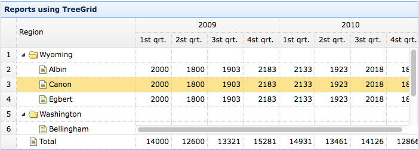

TreeGrid
Extend from $.fn.datagrid.defaults. Override defaults with $.fn.treegrid.defaults.
The treegrid is used to show hierarchical data in grid. It is based on datagrid and combines treeview and editable grid. The treegrid allows you to create customizable, async expandable rows and show hierarchical data in muliple columns.
Dependencies
- datagrid
Usage Example
Create treegrid in HTML markup. For the most part, the treegrid follows the same structure and formatting as datagrid.
Create treegrid using javascript.
Properties
The properties extend from datagrid, below is the added properties for treegrid.
| Name | Type | Description | Default |
|---|---|---|---|
| idField | string | Defines the key field to identify a tree node. required. | null |
| treeField | string | Defines the tree node field. required. | null |
| animate | boolean | Defines if to show animation effect when node expand or collapse. | false |
| checkbox | boolean,function |
Defines if to show the checkbox before every row node.
If a function is specified, return true to show the checkbox.
Available since version 1.4.5.
Code example:
$('#tg').treegrid({
checkbox: function(row){
var names = ['Java','eclipse.exe','eclipse.ini'];
if ($.inArray(row.name, names)>=0){
return true;
}
}
})
|
false |
| cascadeCheck | boolean | Defines if to cascade check. Available since version 1.4.5. | true |
| onlyLeafCheck | boolean | Defines if to show the checkbox only before leaf node. Available since version 1.4.5. | false |
| lines | boolean | Defines if to show lines between treegrid nodes. | false |
| loader | function(param,success,error) |
Defines how to load data from remote server. Return false can abort this action.
This function takes following parameters: param: the parameter object to pass to remote server. success(data): the callback function that will be called when retrieve data successfully. error(): the callback function that will be called when failed to retrieve data. |
json loader |
| loadFilter | function(data,parentId) | Return the filtered data to display. |
Events
The events extend from datagrid, below is the added events for treegrid.
| Name | Parameters | Description |
|---|---|---|
| onClickRow | row | Fires when user click a row. |
| onDblClickRow | row | Fires when user dblclick a row. |
| onClickCell | field,row | Fires when user click a cell. |
| onDblClickCell | field,row | Fires when user dblclick a cell. |
| onBeforeLoad | row, param | Fires before a request is made to load data, return false to cancel this load action. |
| onLoadSuccess | row, data | Fires when data loaded successfully. |
| onLoadError | arguments | Fires when data loaded fail, the arguments parameter is same as the 'error' function of jQuery.ajax. |
| onBeforeSelect | row | Fires before the user selects a row, return false to cancel this action. |
| onSelect | row | Fires when the user selects a row. |
| onBeforeUnselect | row | Fires before the user unselects a row, return false to cancel this action. |
| onUnselect | row | Fires when the user unselects a row. |
| onBeforeCheckNode | row,checked | Fires before the user checks a row node, return false to cancel this action. Available since version 1.4.5. |
| onCheckNode | row,checked | Fires when the user checks a row node. Available since version 1.4.5. |
| onBeforeExpand | row | Fires before a row is expanded, return false to cancel this expand action. |
| onExpand | row | Fires when a row is expanded. |
| onBeforeCollapse | row | Fires before a row is collapsed, return false to cancel this collapse action. |
| onCollapse | row | Fires when a row is collapsed. |
| onContextMenu | e, row | Fires when a row is right clicked. |
| onBeforeEdit | row | Fires when the user starts editing a row. |
| onAfterEdit | row,changes | Fires when the user finishes editing. |
| onCancelEdit | row | Fires when the user cancels editing a row. |
Methods
Many methods take a parameter named 'id', this parameter indicate the tree node value.
| Name | Parameter | Description |
|---|---|---|
| options | none | Return the options of treegrid. |
| resize | options | Set treegrid size, the options contains two properties: width: the new width of treegrid. height: the new height of treegrid. |
| fixRowHeight | id | fix the specified row height. |
| loadData | data | Load the treegrid data. |
| load | param |
Load and show the first page. Available since version 1.3.4.
Code example:
// load and send some request parameters
$('#tg').treegrid('load', {
q: 'abc',
name: 'name1'
});
|
| reload | id |
Reload treegrid data.
If the 'id' parameter is passed, reload the specified tree row, otherwise reload all tree rows.
Code example:
$('#tt').treegrid('reload', 2); // reload the row which value is equals to 2
$('#tt').treegrid('reload'); // reload the all rows
$('#tt').treegrid('reload', {id:2, q:'abc'}); // reload the specified row with 'q' parameter passing to server
|
| reloadFooter | footer | Reload footer data. |
| getData | none | Get the loaded data. |
| getFooterRows | none | Get the footer data. |
| getRoot | none | Get the root node, return node object |
| getRoots | none | Get the root nodes, return node array. |
| getParent | id | Get the parent node. |
| getChildren | id | Get the children nodes. |
| getSelected | none | Get the selected node and return it, if no node selected return null. |
| getSelections | none | Get all selected nodes. |
| getCheckedNodes | none | Get all checked rows. Available since version 1.4.5. |
| getLevel | id | Get the specified node level. |
| find | id | Find the specifed node and return the node data. |
| select | id | Select a node. |
| unselect | id | Unselect a node. |
| selectAll | none | Select all nodes. |
| unselectAll | none | Unselect all nodes. |
| checkNode | id | Set the specified row node to checked. Available since version 1.4.5. |
| uncheckNode | id | Set the specified row node to unchecked. Available since version 1.4.5. |
| collapse | id | Collapse a node. |
| expand | id | Expand a node. |
| collapseAll | id | Collapse all nodes. |
| expandAll | id | Expand all nodes. |
| expandTo | id | Expand from root to specified node. |
| toggle | id | Toggles expanded/collapsed state of the node. |
| append | param |
Append nodes to a parent node. The 'param' parameter contains following properties: parent: the parent node id, if not assigned, append as root nodes. data: array, the nodes data. Code example:
// append some nodes to the selected row
var node = $('#tt').treegrid('getSelected');
$('#tt').treegrid('append',{
parent: node.id, // the node has a 'id' value that defined through 'idField' property
data: [{
id: '073',
name: 'name73'
}]
});
|
| insert | param |
Insert a new node to specified node. The 'param' parameter contains following properties: before: the id value of node to insert before. after: the id value of node to insert after. data: the new node data. Available since version 1.3.1. Code example:
// insert a new node before the selected node
var node = $('#tt').treegrid('getSelected');
if (node){
$('#tt').treegrid('insert', {
before: node.id,
data: {
id: 38,
name: 'name38'
}
});
}
|
| remove | id | Remove a node and it's children nodes. |
| pop | id | Pop and return a node data including its children after remove that node. Available since version 1.3.1. |
| refresh | id | Refresh the specified node. |
| update | param |
Update the specified node. The param contains following properties: id: the node id that indicate the node to be updated. row: the new row data. Available since version 1.3.1. Code example:
$('#tt').treegrid('update',{
id: 2,
row: {
name: 'new name',
iconCls: 'icon-save'
}
});
|
| beginEdit | id | Begin editing a node. |
| endEdit | id | End editing a node. |
| cancelEdit | id | Cancel editing a node. |
| getEditors | id | Get the specified row editors. Each editor has the following properties: actions: the actions that the editor can do. target: the target editor jQuery object. field: the field name. type: the editor type. |
| getEditor | param | Get the specified editor, the param contains two properties: id: the row node id. field: the field name. |
| showLines | none | Display the treegrid lines. |